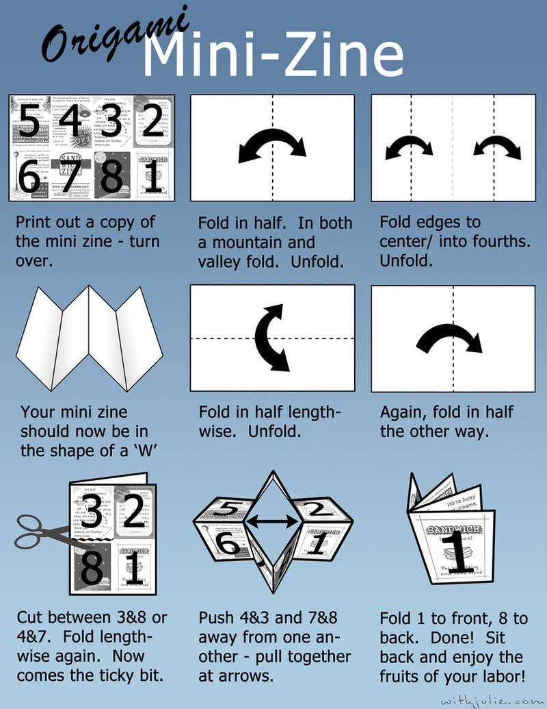

1) Load Images
No images loaded.
2) Assign Images
Default order is alphabetical. You can reassign any slot below.
Loaded Images
Preview (11 x 8.5 in landscape)
Tip: Drag one panel and drop on another panel to swap assignments.
How To Fold
